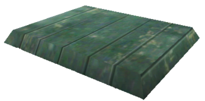
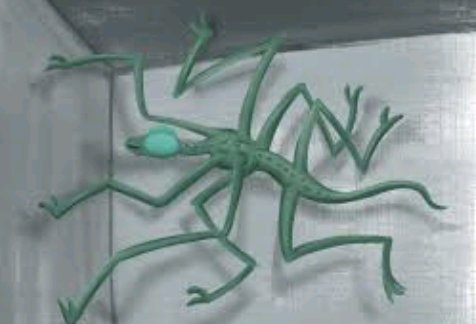
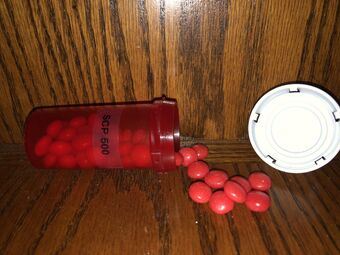
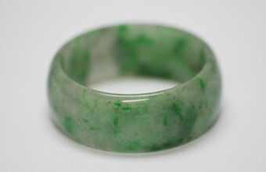

| Inicio | |
| SCP-148, La Aleación de la Telequinésis | |
|  | El SCP-148 es una sustancia metálica compuesta de una variedad de elementos conocidos y desconocidos, compuesto principalmente de platino e iridio, con composiciones de 62% y 20% respectivamente. Además varios otros metales están presentes en su composición, incluyendo: hierro, cobalto y cobre, que en conjunto conforman un 16.5% de la masa de SCP-148.
Es capaz de bloquear u obstaculizar las propiedades extrasensoriales que afectan a la mente de los organismos vivos que se encuentren cerca de él. Esté efecto, aunque sea difícil de cuantificar, parece inversamente proporcionar al cuadrado de la distancia desde el sujeto a la superficie de SCP-148 y directamente proporcional a la cantidad de SCP-148 en consideración. El SCP en cuestión puede encontrarse en la cámara de contención del SCP-035, el cual se ha caido debido a los temblores provocados por el SCP-682. Este puede convertirse en un lingote si se usa el SCP-914 con el ajueste de Grueso o Áspero, si este lingote se mejora junto a la máscara de gas o el traje de materiales de peligrosos con el ajuste de Fino o Muy Fino, se crea una variante pesada de los elementos respectivos. Está variante otorga inmunidad a los efectos de SCP-012. La variante de traje de materiales peligrosos otorga inmunidad a cualquier cosa dentro de la cámara de contención de SCP-035. |
| SCP-372, El Saltador Periférico | |
|  | El SCP-372 es una criatura de género desconocido, de aproximadamente 2 metros de largo desde la cabeza hasta la cola, y un peso aproximado de 45 kilogramos. Tiene un cuerpo largo y delgado con ocho pares de extremidades estrechas. Cada parte del cuerpo es anormalmente flexible, y las extremidades están recubiertas con pequeñas fibras que se adhieren a casi cualquier superficie sólida. Gracias a un órgano sensorial propio del especímen, este puede no solo ecolocalizar, sino también de detectar transferencias de energía, como los impulsos eléctricos en los cerebros de seres cercanos. SCP-372 ha aprendido a sincronizar sus movimientos con esos pulsos, prediciendo movimientos de cualquier ser que los rodea. Utiliza está técnica para ocultarse, ya sea escondiéndose detrás de la cabeza de una persona que la busca, o escondiéndose en sus puntos ciegos.
Al entrar en su cámara de contención se puede escuchar un crujido, el cual es un indicador de que el SCP-372 ha empezado a acechar al jugador. Al girar muy rápido o parpadear rápidamente, el Jugador, en ocasiones, puede ver a SCP-372 fuera de la esquina de su vista. SCP-372 a veces hace ruidos mientras acecha al Jugador a lo largo del juego. |
| SCP-500, Panácea | |
|  | El SCP-500 es una pequeña lata de plástico que actualmente contiene cuarenta y siete píldoras rojas. Una píldora tomada oralmente, curará todas las enfermedades del sujeto en un plazo de dos horas, donde el tiempo exacto dependerá de la gravedad y la cantidad de enfermedades que posea el sujeto. Las píldoras de SCP-500 pueden ser encontradas en estantes en el pequeño espacio de almacenamiento en los Túneles de Mantenimiento y en la sala de almacenamiento dentro de la recámara de contención de SCP-035. SCP-500 puede curar a SCP-008, enfermedades causadas por SCP-1025, y cualquier otra herida que el Jugador haya tenido. |
| SCP-714, El Anillo de Jade | |
|  | El SCP-714 parece ser nada más que un anillo de jade, el cual ha demostrado ser capaz de expandirse y contraerse perfectamente al dedo de cualquiera quien lo toque, solo cambia de tamaño cuando es tocado por un "nuevo" sujeto. Sin embargo, esto es lo menos importante de sus propiedades. Este tiene varios efectos meméticos (negativos), incluyendo:
El SCP-714 puede ser encontrado en un cuarto de almacenamiento junto con SCP-860 y SCP-1025. El Jugador debe tener una Tarjeta de Acceso de al menos Nivel 3 o superior con el fin de entrar al cuarto. Este objeto puede ser de lo más útil gracias a la proteccion que da ante otros efectos negativos, como el sobrevivir al toque mortal del SCP-049 o anular los efectos del SCP-012. |
| SCP-914, El Mecanismo | |
 |
El SCP-914 es un enorme dispositivo mecánico de varias toneladas que cubre un área de dieciocho metros cuadrados, compuesto por tornillos, correas, poleas, engranajes, resortes y otros componentes mecánicos. Tiene un panel frontal grande y dos cabinas, etiquetadas como Entrada y Salida.Mientras está dentro de la máquina, según la configuración de la perilla en el panel frontal, la máquina parecerá refinar o degradar el elemento, con Áspero siendo el más degradado, y siendo Muy Fino el más mejorado.
La cámara de SCP-914 requiere una tarjeta de acceso de nivel 2 para acceder. Gran parte de la cámara está ocupada por SCP-914, y el jugador es capaz de mejorar varios de los objetos que haya estado recolectando, incluyendo otros SCP´s. |
| SCP-1025, La Enciclopedia de Enfermedades Comunes | |
 |
El SCP-1025 es un libro de tapa dura, de aproximadamente 1,500 páginas. La cubierta y el bloque incluye el título "The Encyclopedia of Common Diseases" (La Enciclopedia de Enfermedades Comunes), si una persona lee alguna de las enfermedades que describe el libro,la misma empezará a experimentar los síntomas de la misma enfermedad que haya leído.
El SCP-1025 se puede encontrar en una Sala de Almacenamiento junto con el SCP-714 y el SCP-860. Si el Jugador decide leer a SCP-1025, se seleccionará una página aleatoria y el Jugador recibirá cualquiera de las siguientes enfermedades:
Los efectos de este SCP pueden ser anulados usando una máscara de gas mejorada usando al SCP-500 o al SCP-714. |
| SCP-1123, Calavera de la atrocidad | |

|
El SCP-1123 es una calavera humana carente de mandíbula inferior y de todos sus dientes. Cuando un sujeto toca su superficie experimentará un estado de fuga disociativa. Los síntomas de la fuga persisten durante noventa minutos o seis horas.
La fuga se caracteriza por la confusión, desorientación y la adopción de una nueva identidad y recuerdos que consisten en el conocimiento, incluido el lenguaje, previamente desconocido para el sujeto. Durante la fuga, el individuo perderá todos los recuerdos de su identidad previa. A medida que el estado de fuga disminuye, el sujeto recuperará los recuerdos de su identidad anterior, pero también retendrá la memoria de la nueva identidad impresa y todo el conocimiento asociado a esta.
El SCP-1123 puede ser encontrado dentro de su cámara de contención. Cuando el jugador intente recogerla, adoptará la identidad de lo que se puede asumir es un PDG en un campo de concentración nazi, durante la Segunda Guerra Mundial. |
| SCP-1499, La Máscara de Gas | |
 |
El SCP-1499 es una máscara de gas soviética GP-5.Los efectos anómalos de SCP-1499 se activan cuando un humano se coloca a SCP-1499 en su cabeza. Aproximadamente un segundo después de que SCP-1499 esté completamente asegurado a la cabeza del sujeto, este comenzará a desaparecer de la vista y ya no será detectable. El sujeto no reporta sentir ninguna sensación de movimiento en ese momento.
Al usar a SCP-1499, los sujetos de pruebas informan que se encuentran en entornos completamente diferentes de en los que estaban antes de vestir a SCP-1499. Los sujetos han reportado que parecen ser estériles e inhóspitos, con altas torres negras llenando el área. El SCP-1499 se puede encontrar dentro de una caja de madera en su cámara de contención. Al equipar a SCP-1499, el jugador será transportado a un entorno distinto. Quitar la máscara de gas devolverá al jugador a la ubicación en la que inicialmente lo equipó, independientemente de lo lejos que viaje en el entorno. Esta anomalía puede ser usada a favor del jugador para escapar del SCP-106. |